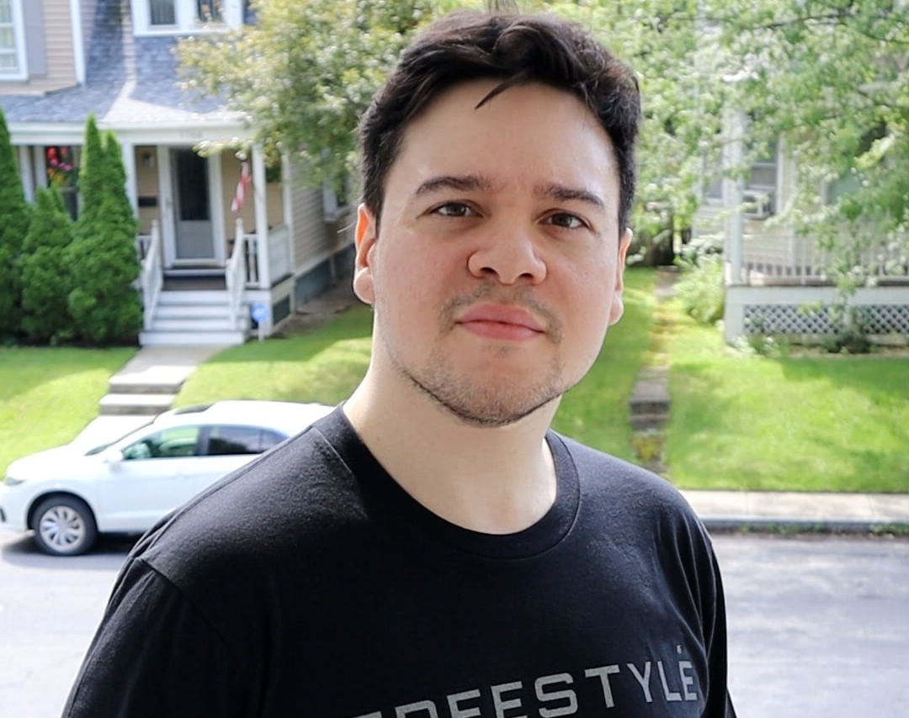

Jeremy Soto

Digital Artist
Contact
Hobbies
Creative professional with a background in teaching, customer support, and
digital arts, currently expanding skills in technology and programming
while bringing strong communication and problem-solving abilities.

The New England Institute of Art - Brooklyn, MA
(September 2014)
Bachelor of Arts in Media Arts, Animation and Science
Everest College - South Orlando, FL (Aprile 2016)
Associate Degree in Business and Advertising

Curioos - Customer Servie Consultant (Aug 2018 - Sept 2024)
- Created and optimized social media and website visuals
- Increased engagement through marketing strategies
- Collaborated on email campaings
- Improved image porcessing workflows
- Maintained product records
- Delivered high quality customer support
- Coordinated project meetings
GameStop - Store Sales Representative (June 2017 - Sept 2018)
- Maintained store operations
- Met sales goals
- Organized sotre layout
- Assisted customers
Livebettwewith - Customer Sercice Associate (April 2016 - Nov 2016)
- Handled product inquiries
- Processed orders
- Resolved customer issues
NEST+m - Assistant Teacher (Dec 2014 - Aug 2016)
- Taught animation and robotics
- Planned lessons
- Mentored students
- Adobe Photoshop, Illutrator, Animation
- Microsoft Office, Python
- Writing, Advertising, Photography
- Audio Engineering
- Fluent in English and a bit in Spanish